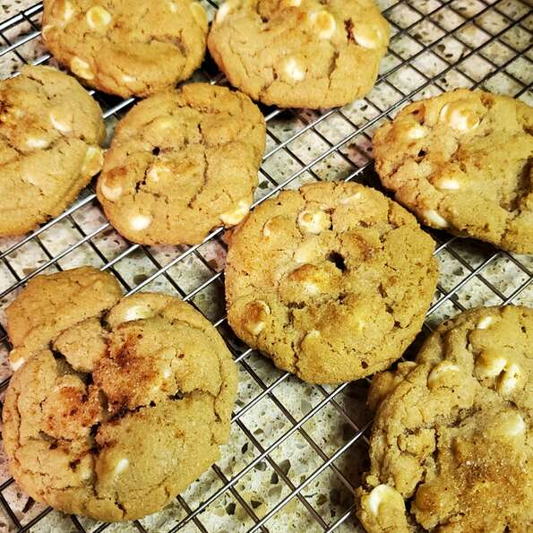

Cinnamon White Chocolate Cookies

White Chocolate Cookies with Cinnamon.....dude...
Can't wait to eat 'em
Ingredients
- 1/2 cup of softened butter
- 1/2 cup of shortening
- 3/4 cup of white sugar
- 1/2 cup of brown sugar
- 1 egg
- 2 teaspoon of vanilla extract
- 1 3/4 cups of all purpose flour
- 1 teaspoon of baking soda
- 1/2 teaspoon of salt
- 10 ounces of chopped white chocolate
- 1/2 teaspoon of ground cinnamon
Steps
- Beat butter and shortening together with an electric mixer until creamy and smooth; gradually add white sugar and brown sugar, beating on medium speed, until incorporated. Beat in egg and vanilla extract.
- Combine flour, baking soda, and salt in a separate bowl; mix into butter mixture until incorporated. Fold in white chocolate and cinnamon. Refrigerate dough for 1 hour.
- Preheat oven to 350 degrees F (175 degrees C). Lightly grease baking sheets.
- Drop dough by the heaping tablespoonful onto the prepared baking sheet, leaving 3 inches between cookies.
- Bake in the preheated oven until cookies are lightly browned on the edges, 12 to 14 minutes. Cool on the pans for 10 minutes before removing to cool on a wire rack until cookies are firm.
Source